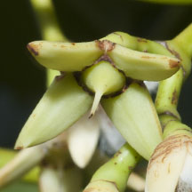
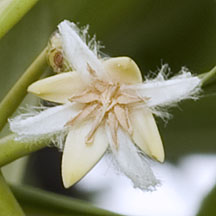

|
|
| plants text index | photo index |
| mangroves > Rhizophora species |
| Bakau
pasir Rhizophora stylosa Family Rhizophoraceae updated Jan 2013 Where seen? This mangrove tree is considered rare, although some shores such as Chek Jawa and Pulau Semakau may have large numbers of them. Large numbers are also seen in a lagoon in the middle of the Sentosa Serapong golf course. According to Hsuan Keng, these were scattered in our mangroves including Pasir Ris, Pulau Pawai, Ulu Pandan and Tanjung Gul. According to Davison, small populations are found in Pasir Ris Park, St John's Island, Pulau Semakau, Pulau Tekong, Sentosa and Western Catchment. According Giersen, it grows on a variety of ground, preferring banks of tidal rivers but also pioneering species on the coast and landward margins of mangroves. It occurs primarily in Southeast Asia and has been found in tropical Australia as well as Taiwan and northern Australia. Features: Tree with single or multiple-trunks up to 10m tall. Aerial roots from the lower branches. Stilt roots up to 3m long, often forming extensive loops to some distance from the trunk. Bark grey to black and fissured. Leaves eye-shaped (8-15cm long), shiny green, leathery, smaller than R. mucronata, with tiny evenly distributed black spots on the underside. Stipule usually pale or yellowish. Flowers (1-2cm) 4-8 or more on long branching stalks (2-4cm) drooping down from the branch. Bract egg-shaped white hard thick. Petals thin, delicate with dense woolly marginal hairs. The petals fall off soon after blossoming. Style (0.4-0.6cm) longer than in R. mucronata. The flowers are believed to be wind pollinated. The fruit looks like a brown, upside down pear (2-3cm) and is crowned by short persistent sepals. The fruit is small relative to the sepals, when compared to R. mucronata. The cylindrical hypocotyl is not as pimply as that of R. mucronata and generally shorter (less than 30cm). Sometimes mistaken for Bakau kurap (Rhizophora mucronata) which has larger leaves and longer, more pimply propagules. The two species can only be distinguished with certainty by looking at the details of the flowers. R. stylosa has a longer style. Human uses: According to Giesen, it is used as timber, firewood and to produce charcoal. The Australian aborigines use it to make boomerangs, spears and ceremonial objects. The fruit is used to make a light wine and a concoction to treat blood in the urine. Status and threats: It is listed as 'Vulnerable' on the Red List of threatened plants of Singapore. It is threatened by habitat destruction and oil spills. |
 Looping stilt roots extending outward. Pulau Semakau, May 07  Flowers on long branching stalks. Pulau Semakau, Mar 09 |
 Fruit on stalks. Fruit not so large compared to sepals. St John's Island, Aug 09 |
 Flower with long style, more visible without petals. Pulau Hantu, Sep 13 |
 Pulau Semakau, Feb 12 |
| Bakau pasir on Singapore shores |
| Photos of Bakau pasir for free download from wildsingapore flickr |
| Distribution in Singapore on this wildsingapore flickr map |
|
Links
Other references
|
|
|